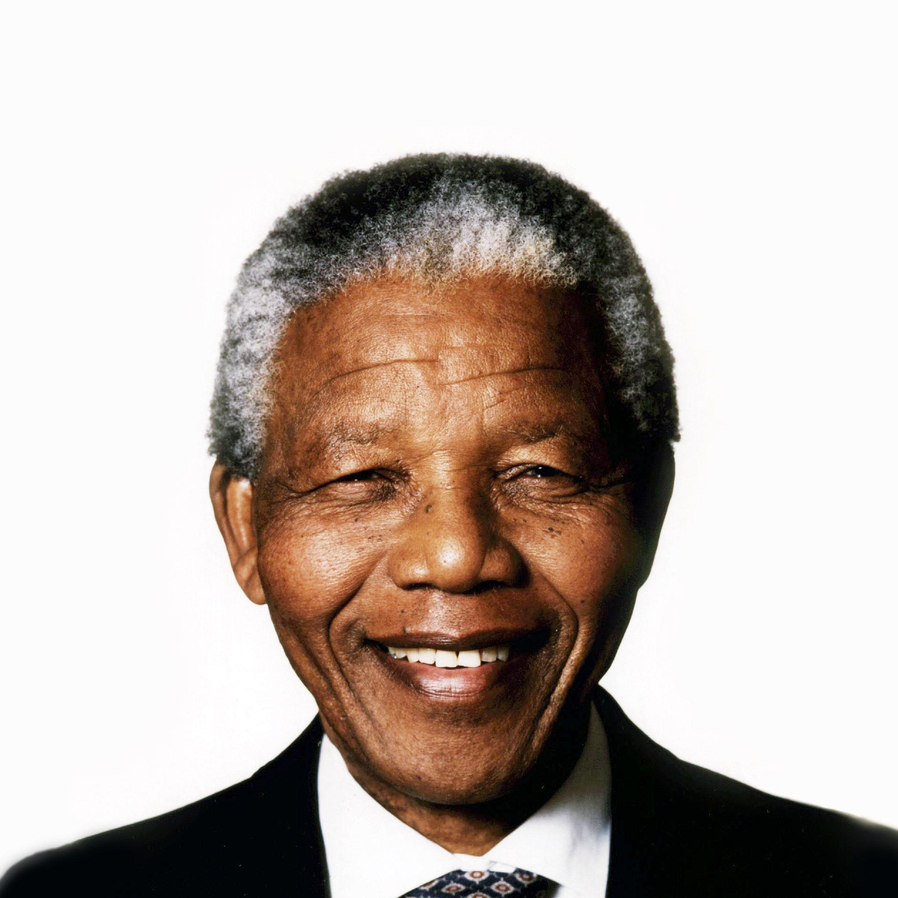

Setelah melakukan perbaikan dalam hal penerimaan informasi dan bisa mengolahnya dengan bijak,
seseorang yang memiliki kecerdasan dalam berpikir harus bisa memberikan
tanggapan dan pendapat yang bijak terhadap informasi tersebut. Sebagai manusia, kita
memiliki kewajiban untuk menyebarkan informasi yang benar, namun harus disampaikan dengan
cara yang tepat agar orang lain bisa menerima dan memahami informasi tersebut yang kita
sampaikan.
Untuk mencapai hal tersebut, tentunya dibutuhkan suatu kemampuan retorika yang baik.
Retorika adalah suatu gaya/seni berbicara baik yang dicapai berdasarkan bakat alami
dan keterampilan teknis. Dewasa ini retorika diartikan sebagai kesenian untuk berbicara
baik, yang dipergunakan dalam proses komunikasi antar manusia.
Beberapa tokoh panutan dalam penggunaan retorika ketika menyampaikan pendapatnya :
Ir. Soekarno
Tokoh pertama tentunya datang dari Indonesia, siapa lagi kalau bukan sang orator,
Ir. Soekarno. Beliau adalah residen Indonesia pertama yang menjabat pada periode
1945–1966. Ia memainkan peranan penting dalam memerdekakan bangsa Indonesia dari
penjajahan Belanda. Ia adalah Proklamator Kemerdekaan Indonesia bersama dengan Mohammad
Hatta pada tanggal 17 Agustus 1945. Soekarno adalah yang pertama kali mencetuskan
konsep mengenai Pancasila sebagai dasar negara Indonesia dan ia sendiri yang
menamainya.
Kata-kata orator yang terus dikenang adalah :
“Perjuanganku lebih mudah karena mengusir penjajah, perjuanganmu
akan lebih sulit karena melawan bangsamu sendiri.”
Barack Obama
Tokoh kedua datang dari Amerika Serikat, sang presiden Amerika Serikat ke-44, Barack Obama.
Beliau merupakan orang Afrika Amerika pertama yang menempati jabatan tersebut.
Ia dulunya seorang penggerak masyarakat di Chicago sebelum mendapat gelar hukumnya.
Ia memulai kampanye presidennya tahun 2007, dan dilantik sebagai presiden Amerika
Serikat ke-44 pada tanggal 20 Januari 2009.
Kata-kata orator yang terus dikenang adalah :
We did not come to fear the future. We came here to shape it.
(Kami tidak datang untuk takut akan masa depan. Kami datang ke sini untuk
membentuknya.)
Nelson Mandela

Tokoh ketiga datang dari benua Afrika, sang mantan presiden Afrika Selatan, Nelson Mandela.
Beliau merupakan adalah seorang revolusioner anti-apartheid dan politisi Afrika
Selatan yang menjabat sebagai Presiden Afrika Selatan sejak 1994 sampai 1999.
Ia adalah orang Afrika Selatan berkulit hitam pertama yang memegang jabatan tersebut
dan presiden pertama yang terpilih melalui keterwakilan penuh, dalam sebuah pemilu
multiras
Kata-kata orator yang terus dikenang adalah :
“I learned that courage was not the absence of fear, but the triumph
over it. The brave man is not he who does not feel afraid, but he who
conquers that fear”
(Saya belajar bahwa keberanian bukanlah ketiadaan
rasa takut, tetapi kemenangan di atasnya, Pria pemberani bukanlah orang
yang tidak merasa takut, tapi orang yang sanggup mengatasi rasa takut)
Silahkan pilih tokoh favoritmu dengan mengklik salah satu foto dari mereka, dan lihatlah statistik tokoh retorika favorit anda :
Tokoh Retorika Favorit
| Ir. Soekarno |
0 |
| Barack Obama |
0 |
| Nelson Mandela |
0 |